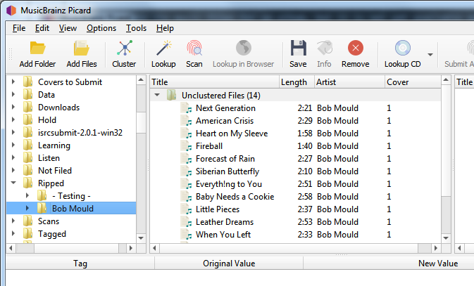
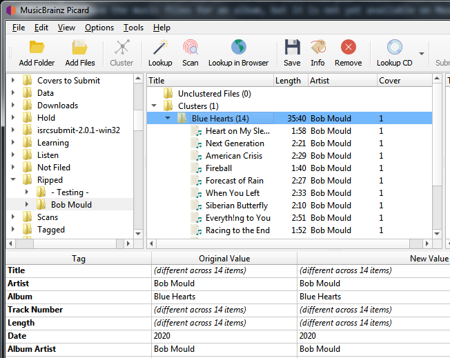
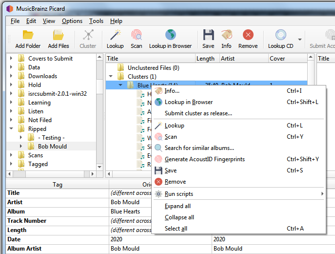

Soumettre le cluster comme une version¶
Picard peut vous aider à soumettre des informations à la base de données MusicBrainz en remplissant automatiquement le formulaire de soumission sur le site Web avec les données de vos fichiers. Cette méthode est généralement utilisée lorsque vous disposez des fichiers musicaux d’un album, mais que celui-ci n’est pas encore disponible sur MusicBrainz.
Soumettre plusieurs pistes en tant que groupe¶
Pour utiliser cette fonctionnalité, les étapes à suivre sont les suivantes :
1. Chargez les fichiers
Faites glisser le lot de fichiers à traiter depuis le volet du navigateur vers la section « Fichiers non regroupés » du volet de regroupement.

{kind=link}
2. Regroupez les fichiers
Sélectionnez les fichiers dans le panneau de clustering et combinez-les en clusters d’albums en utilisant la commande . Picard tentera de regrouper les fichiers en se basant sur leurs métadonnées existantes. Selon la qualité des métadonnées, vous devrez peut-être ajouter manuellement des éléments au cluster ou en supprimer pour vous assurer qu’il est complet pour l’album et qu’il ne contient pas de fichiers supplémentaires.

{kind=link}
3. Soumettre le cluster
Une fois que vous avez les bons fichiers dans le cluster et qu’il est complet pour l’album, vous pouvez le soumettre à MusicBrainz en sélectionnant le cluster et en faisant un clic droit pour faire apparaître le menu contextuel. De là, vous devriez voir une option .

{kind=link}
4. Confirmez les informations soumises
Lorsque l’option est sélectionnée, le système soumet une demande d’ajout des informations à MusicBrainz, et un écran de confirmation s’affiche dans votre navigateur. Vous pouvez voir les informations qui seront soumises en développant le lien « Données soumises avec cette demande ».

5. Complétez la soumission
En sélectionnant Continuer, vous ouvrirez un écran d’édition « Ajouter un communiqué » dont les champs sont remplis avec vos informations. À partir de cet écran, vous pouvez vérifier et soumettre votre modification comme si vous aviez saisi toutes les informations manuellement.
Note
Avant de soumettre l’édition, vous devez vérifier que toutes les informations ont été correctement saisies conformément aux Guides de style MusicBrainz et que les groupes d’artistes et de sorties ont été mis en correspondance avec des éléments existants, le cas échéant. Vous devriez également ajouter une note d’édition citant la source de l’information.
Soumission d’une seule piste¶
Vous pouvez également utiliser cette fonctionnalité pour soumettre une seule piste en tant que version ou en tant qu’enregistrement autonome. Pour ce faire, cliquez avec le bouton droit de la souris sur le fichier et sélectionnez ou selon le cas. Encore une fois, assurez-vous de confirmer que les informations ont été correctement saisies conformément aux Guides de style MusicBrainz et que les groupes d’artistes et de versions ont été mis en correspondance avec des éléments existants, le cas échéant. Vous devez également ajouter une note d’édition citant la source de l’information.